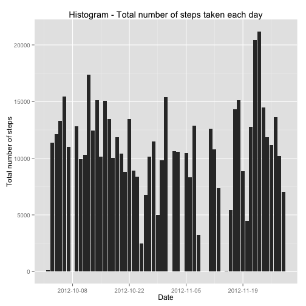
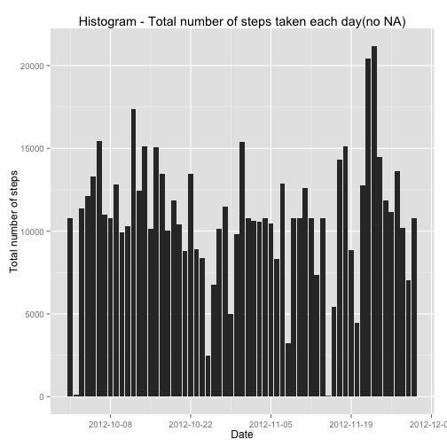
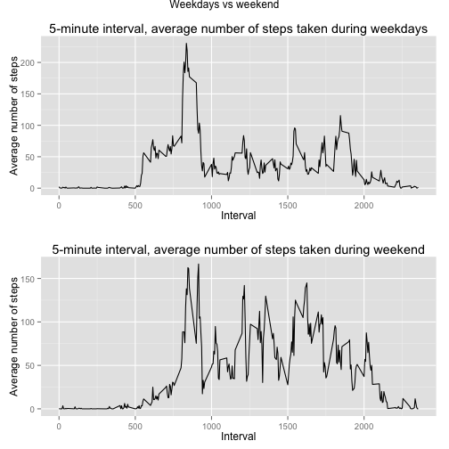

library(datasets)
library(plyr)
library(ggplot2)
library(scales)
library(grid)
library(gridExtra)
setwd("~/Dropbox/Github/RepData_PeerAssessment1/")
activity.table<- read.csv("activity.csv", colClasses = c("integer", "Date", "integer"))
activity.table.noNA <- na.omit(activity.table)
steps.per.day <- ddply(activity.table[!is.na(activity.table$steps),],.(date), summarize, steps = sum(steps))
ggplot(steps.per.day, aes(x = date, y = steps)) + geom_histogram(stat = "identity") +
scale_x_date(breaks = date_breaks("2 week")) +
labs(title="Histogram - Total number of steps taken each day",
x="Date", y="Total number of steps")

The mean ...
meanStepsPerDay<- mean(steps.per.day$steps)
meanStepsPerDay
## [1] 10766.19
...and the median :
medianStepsPerDay<- median(steps.per.day$steps)
medianStepsPerDay
## [1] 10765
AvgStep.interval <- ddply(activity.table[!is.na(activity.table$steps),], .(interval), summarize, steps = mean(steps))
AvgStep.interval <- AvgStep.interval[order(AvgStep.interval$interval),]
print(ggplot(AvgStep.interval, aes(x=interval, y=steps)) + geom_line() +
labs(title="Avg num of steps taken in 5 mins interval",
x="5 mins interval", y="Avg number of steps taken"))
Which 5-minute interval contains the maximum number of steps:
AvgStep.interval[which.max(AvgStep.interval$steps),]
## interval steps
## 104 835 206.1698
The total no. of missing missing values (coded as NA) :
nrow.fullTable <- nrow(activity.table)
nrow.table.noNA <- nrow(activity.table.noNA)
missingValue <- nrow.fullTable - nrow.table.noNA
missingValue
## [1] 2304
A strategy to fill up all the missing values : to fill all the missing value with the average value calculated previously
for (row in 1: nrow.fullTable){
if(is.na(activity.table$steps[row])){
activity.table$steps[row]<-AvgStep.interval[which(AvgStep.interval$interval == activity.table$interval[row]),]$steps
}
}
Create a new dataset with missing value filled:
steps.per.day.noNA <- ddply(activity.table,.(date), summarize, steps = sum(steps))
Make a histogram after the missing values are filled
ggplot(steps.per.day.noNA, aes(x = date, y = steps)) + geom_histogram(stat = "identity") +
scale_x_date(breaks = date_breaks("2 week")) +
labs(title="Histogram - Total number of steps taken each day(no NA)",
x="Date", y="Total number of steps")

And the corresponding mean and median:
mean.noNA<- mean(steps.per.day.noNA$steps)
mean.noNA
## [1] 10766.19
median.noNA <- median(steps.per.day.noNA$steps)
median.noNA
## [1] 10766.19
The difference observed versus the data set with NA value:
mean.diff <- meanStepsPerDay - mean.noNA
mean.diff
## [1] 0
median.diff <- medianStepsPerDay - median.noNA
median.diff
## [1] -1.188679
Create a new factor variable in the dataset with two levels -- "weekday" and "weekend" :
weekdayMap <-data.frame(c("Monday","Tuesday","Wednesday","Thursday","Friday","Saturday","Sunday"),c(rep("weekday",5),rep("weekend",2)))
colnames(weekdayMap) <- c("DayOfWeek","DayOrEnd")
weekdayMap$DayOfWeek <- as.factor(weekdayMap$DayOfWeek)
steps.per.day.noNA$day <-weekdays(as.Date(steps.per.day.noNA$date))
steps.per.day.noNA$day <- weekdayMap[match(steps.per.day.noNA$day, weekdayMap$DayOfWeek),2]
activity.table$DayOrEnd <- steps.per.day.noNA[match(activity.table$date,steps.per.day.noNA$date),3]
activity.by.weekday <- activity.table[which(activity.table$DayOrEnd == "weekday"),]
activity.by.weekend <- activity.table[which(activity.table$DayOrEnd == "weekend"),]
Make a panel plot containing a time series plot (i.e. type = "l") of the 5-minute interval (x-axis) and the average number of steps taken, averaged across all weekday days or weekend days (y-axis).
interval.by.weekday <- ddply(activity.by.weekday, .(interval), summarize, steps = mean(steps))
interval.by.weekend <- ddply(activity.by.weekend, .(interval), summarize, steps = mean(steps))
plot.weekday<- ggplot(interval.by.weekday, aes(x=interval, y=steps)) + geom_line() +
labs(title="5-minute interval, average number of steps taken during weekdays",
x="Interval", y="Average number of steps")
plot.weekend<- ggplot(interval.by.weekend, aes(x=interval, y=steps)) + geom_line() +
labs(title="5-minute interval, average number of steps taken during weekend",
x="Interval", y="Average number of steps")
grid.arrange(plot.weekday,plot.weekend, nrow=2, main = "Weekdays vs weekend")
